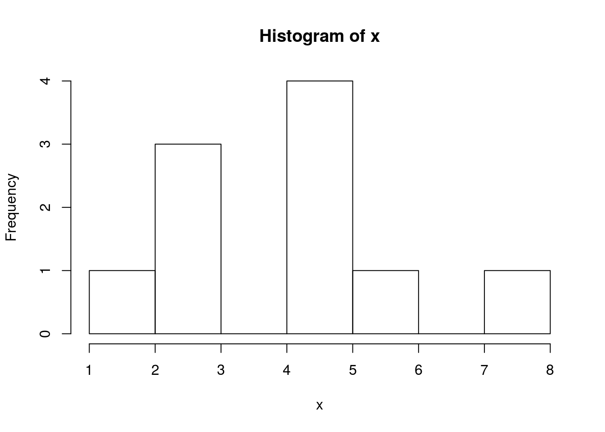
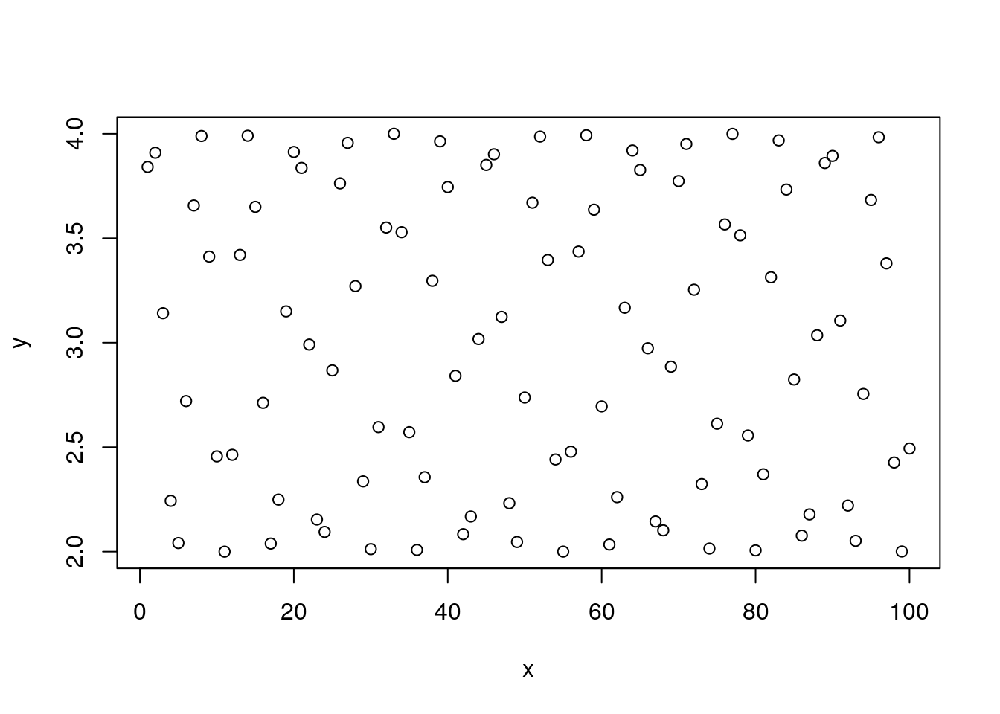
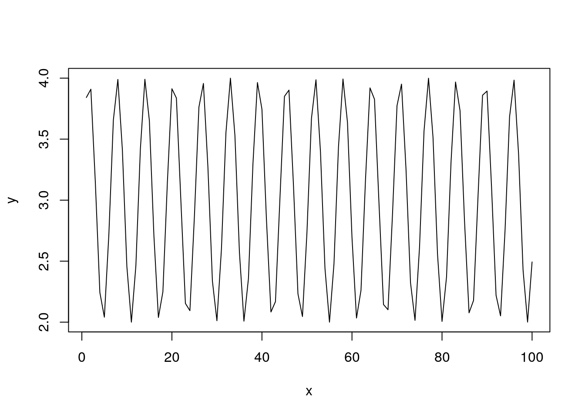
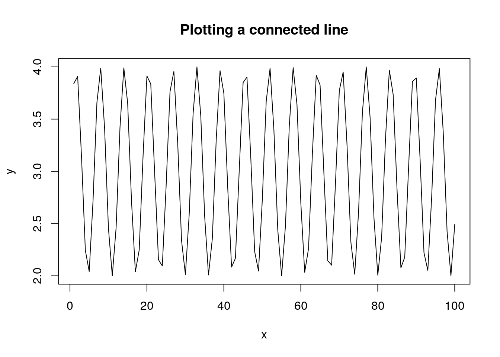
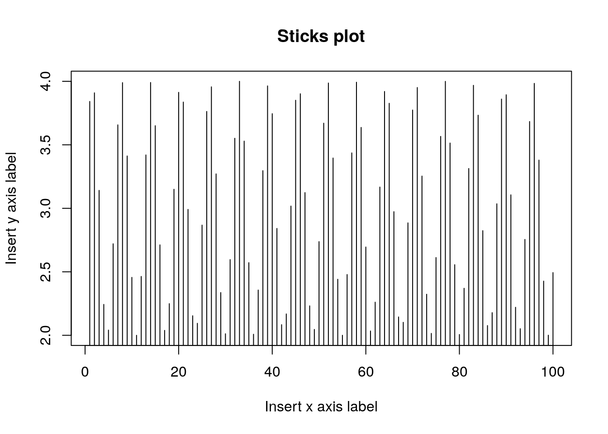
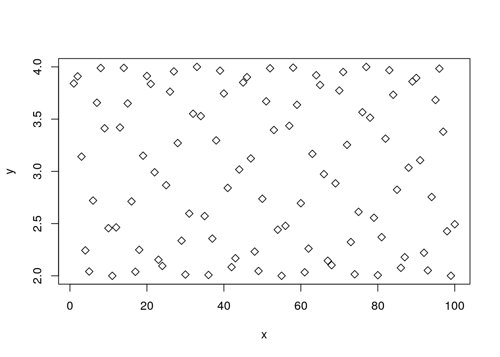
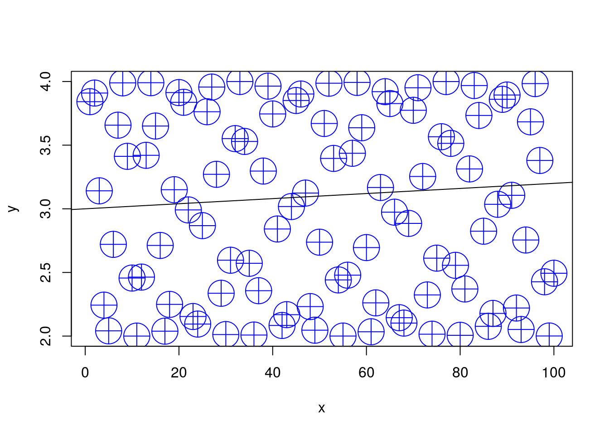

Chapter 3 R Basics
We now start with the basics of R. If you have any experience at all with R, you can probably skip this section.
First, make sure you work with the RStudio IDE. Some useful pointers for this IDE include:
- Ctrl+Return(Enter) to run lines from editor.
- Alt+Shift+k for RStudio keyboard shortcuts.
- Ctrl+r to browse the command history.
- Alt+Shift+j to navigate between code sections
- tab for auto-completion
- Ctrl+1 to skip to editor.
- Ctrl+2 to skip to console.
- Ctrl+8 to skip to the environment list.
- Ctrl + Alt + Shift + M to select all instances of the selection (for refactoring).
- Code Folding:
- Alt+l collapse chunk.
- Alt+Shift+l unfold chunk.
- Alt+o collapse all.
- Alt+Shift+o unfold all.
- Alt+“-” for the assignment operator
<-.
3.0.1 Other IDEs
Currently, I recommend RStudio, but here are some other IDEs:
Jupyter Lab: a very promising IDE, originally designed for Python, that also supports R. At the time of writing, it seems that RStudio is more convenient for R, but it is definitely an IDE to follow closely. See Max Woolf’s review.
Eclipse: If you are a Java programmer, you are probably familiar with Eclipse, which does have an R plugin: StatEt.
Emacs: If you are an Emacs fan, you can find an R plugin: ESS.
Vim: Vim-R.
Visual Studio also supports R. If you need R for commercial purposes, it may be worthwhile trying Microsoft’s R, instead of the usual R. See here for installation instructions.
Online version (currently alpha): R Studio Cloud.
3.1 File types
The file types you need to know when using R are the following:
- .R: An ASCII text file containing R scripts only.
- .Rmd: An ASCII text file. If opened in RStudio can be run as an R-Notebook or compiled using knitr, bookdown, etc.
3.2 Simple calculator
R can be used as a simple calculator. Create a new R Notebook (.Rmd file) within RStudio using File-> New -> R Notebook, and run the following commands.
10+5 ## [1] 1570*81## [1] 56702**4## [1] 162^4## [1] 16log(10) ## [1] 2.302585log(16, 2) ## [1] 4log(1000, 10) ## [1] 33.3 Probability calculator
R can be used as a probability calculator. You probably wish you knew this when you did your Intro To Probability classes.
The Binomial distribution function:
dbinom(x=3, size=10, prob=0.5) # Compute P(X=3) for X~B(n=10, p=0.5) ## [1] 0.1171875Notice that arguments do not need to be named explicitly
dbinom(3, 10, 0.5)## [1] 0.1171875The Binomial cumulative distribution function (CDF):
pbinom(q=3, size=10, prob=0.5) # Compute P(X<=3) for X~B(n=10, p=0.5) ## [1] 0.171875The Binomial quantile function:
qbinom(p=0.1718, size=10, prob=0.5) # For X~B(n=10, p=0.5) returns k such that P(X<=k)=0.1718## [1] 3Generate random variables:
rbinom(n=10, size=10, prob=0.5)## [1] 4 4 5 7 4 7 7 6 6 3R has many built-in distributions. Their names may change, but the prefixes do not:
- d prefix for the distribution function.
- p prefix for the cummulative distribution function (CDF).
- q prefix for the quantile function (i.e., the inverse CDF).
- r prefix to generate random samples.
Demonstrating this idea, using the CDF of several popular distributions:
pbinom()for the Binomial CDF.ppois()for the Poisson CDF.pnorm()for the Gaussian CDF.pexp()for the Exponential CDF.
For more information see ?distributions.
3.4 Getting Help
One of the most important parts of working with a language, is to know where to find help. R has several in-line facilities, besides the various help resources in the R ecosystem.
Get help for a particular function.
?dbinom
help(dbinom)If you don’t know the name of the function you are looking for, search local help files for a particular string:
??binomial
help.search('dbinom') Or load a menu where you can navigate local help in a web-based fashion:
help.start() 3.5 Variable Assignment
Assignment of some output into an object named “x”:
x = rbinom(n=10, size=10, prob=0.5) # Works. Bad style.
x <- rbinom(n=10, size=10, prob=0.5) If you are familiar with other programming languages you may prefer the = assignment rather than the <- assignment. We recommend you make the effort to change your preferences. This is because thinking with <- helps to read your code, distinguishes between assignments and function arguments: think of function(argument=value) versus function(argument<-value). It also helps understand special assignment operators such as <<- and ->.
To print the contents of an object just type its name
x## [1] 7 4 6 3 4 5 2 5 7 4which is an implicit call to
print(x) ## [1] 7 4 6 3 4 5 2 5 7 4Alternatively, you can assign and print simultaneously using parenthesis.
(x <- rbinom(n=10, size=10, prob=0.5)) # Assign and print.## [1] 5 5 5 4 6 6 6 3 6 5Operate on the object
mean(x) # compute mean## [1] 5.1var(x) # compute variance## [1] 0.9888889hist(x) # plot histogram
R saves every object you create in RAM1. The collection of all such objects is the workspace which you can inspect with
ls()## [1] "x"or with Ctrl+8 in RStudio.
If you lost your object, you can use ls with a text pattern to search for it
ls(pattern='x')## [1] "x"To remove objects from the workspace:
rm(x) # remove variable
ls() # verify## character(0)You may think that if an object is removed then its memory is freed. This is almost true, and depends on a negotiation mechanism between R and the operating system. R’s memory management is discussed in Chapter 15.
3.6 Missing
Unlike typically programming, when working with real life data, you may have missing values: measurements that were simply not recorded/stored/etc. R has rather sophisticated mechanisms to deal with missing values. It distinguishes between the following types:
NA: Not Available entries.NaN: Not a number.
R tries to defend the analyst, and return an error, or NA when the presence of missing values invalidates the calculation:
missing.example <- c(10,11,12,NA)
mean(missing.example)## [1] NAMost functions will typically have an inner mechanism to deal with these. In the mean function, there is an na.rm argument, telling R how to Remove NAs.
mean(missing.example, na.rm = TRUE)## [1] 11A more general mechanism is removing these manually:
clean.example <- na.omit(missing.example)
mean(clean.example)## [1] 113.7 Piping
Because R originates in Unix and Linux environments, it inherits much of its flavor. Piping is an idea taken from the Linux shell which allows to use the output of one expression as the input to another. Piping thus makes code easier to read and write.
Prerequisites:
library(magrittr) # load the piping functions
x <- rbinom(n=1000, size=10, prob=0.5) # generate some toy dataExamples
x %>% var() # Instead of var(x)
x %>% hist() # Instead of hist(x)
x %>% mean() %>% round(2) %>% add(10) The next example2 demonstrates the benefits of piping. The next two chunks of code do the same thing. Try parsing them in your mind:
# Functional (onion) style
car_data <-
transform(aggregate(. ~ cyl,
data = subset(mtcars, hp > 100),
FUN = function(x) round(mean(x, 2))),
kpl = mpg*0.4251)# Piping (magrittr) style
car_data <-
mtcars %>%
subset(hp > 100) %>%
aggregate(. ~ cyl, data = ., FUN = . %>% mean %>% round(2)) %>%
transform(kpl = mpg %>% multiply_by(0.4251)) %>%
printTip: RStudio has a keyboard shortcut for the %>% operator. Try Ctrl+Shift+m.
3.8 Vector Creation and Manipulation
The most basic building block in R is the vector. We will now see how to create them, and access their elements (i.e. subsetting). Here are three ways to create the same arbitrary vector:
c(10, 11, 12, 13, 14, 15, 16, 17, 18, 19, 20, 21) # manually
10:21 # the `:` operator
seq(from=10, to=21, by=1) # the seq() functionLet’s assign it to the object named “x”:
x <- c(10, 11, 12, 13, 14, 15, 16, 17, 18, 19, 20, 21) Operations usually work element-wise:
x+2## [1] 12 13 14 15 16 17 18 19 20 21 22 23x*2 ## [1] 20 22 24 26 28 30 32 34 36 38 40 42x^2 ## [1] 100 121 144 169 196 225 256 289 324 361 400 441sqrt(x) ## [1] 3.162278 3.316625 3.464102 3.605551 3.741657 3.872983 4.000000
## [8] 4.123106 4.242641 4.358899 4.472136 4.582576log(x) ## [1] 2.302585 2.397895 2.484907 2.564949 2.639057 2.708050 2.772589
## [8] 2.833213 2.890372 2.944439 2.995732 3.0445223.9 Search Paths and Packages
R can be easily extended with packages, which are merely a set of documented functions, which can be loaded or unloaded conveniently. Let’s look at the function read.csv. We can see its contents by calling it without arguments:
read.csv## function (file, header = TRUE, sep = ",", quote = "\"", dec = ".",
## fill = TRUE, comment.char = "", ...)
## read.table(file = file, header = header, sep = sep, quote = quote,
## dec = dec, fill = fill, comment.char = comment.char, ...)
## <bytecode: 0x3e49070>
## <environment: namespace:utils>Never mind what the function does. Note the environment: namespace:utils line at the end. It tells us that this function is part of the utils package. We did not need to know this because it is loaded by default. Here are some packages that I have currently loaded:
search()## [1] ".GlobalEnv" "package:nycflights13" "package:doSNOW"
## [4] "package:snow" "package:doParallel" "package:parallel"
## [7] "package:iterators" "package:biganalytics" "package:bigmemory"
## [10] "package:dplyr" "package:biglm" "package:DBI"
## [13] "package:MatrixModels" "package:plotly" "package:kernlab"
## [16] "package:scales" "package:plyr" "package:class"
## [19] "package:rpart" "package:nnet" "package:e1071"
## [22] "package:glmnet" "package:foreach" "package:ellipse"
## [25] "package:nlme" "package:lattice" "package:lme4"
## [28] "package:Matrix" "package:multcomp" "package:TH.data"
## [31] "package:survival" "package:mvtnorm" "package:MASS"
## [34] "package:ggalluvial" "package:ggplot2" "package:hexbin"
## [37] "package:data.table" "package:magrittr" "tools:rstudio"
## [40] "package:stats" "package:graphics" "package:grDevices"
## [43] "package:utils" "package:datasets" "package:methods"
## [46] "Autoloads" "package:base"Other packages can be loaded via the library function, or downloaded from the internet using the install.packages function before loading with library. Note that you can easily speedup package download by using multiple CPUs. Just call options(Ncpus = XXX), where XXX is the number of CPUs you want to use. Run parallel::detectCores() if you are unsure how many CPUs you have on your machine.
3.10 Simple Plotting
R has many plotting facilities as we will further detail in the Plotting Chapter 12. We start with the simplest facilities, namely, the plot function from the graphics package, which is loaded by default.
x<- 1:100
y<- 3+sin(x)
plot(x = x, y = y) # x,y syntax 
Given an x argument and a y argument, plot tries to present a scatter plot. We call this the x,y syntax. R has another unique syntax to state functional relations. We call y~x the “tilde” syntax, which originates in works of G. Wilkinson and Rogers (1973) and was adopted in the early days of S.
plot(y ~ x, type='l') # y~x syntax 
The syntax y~x is read as “y is a function of x”. We will prefer the y~x syntax over the x,y syntax since it is easier to read, and will be very useful when we discuss more complicated models.
Here are some arguments that control the plot’s appearance. We use type to control the plot type, main to control the main title.
plot(y~x, type='l', main='Plotting a connected line') 
We use xlab for the x-axis label, ylab for the y-axis.
plot(y~x, type='h', main='Sticks plot', xlab='Insert x axis label', ylab='Insert y axis label') 
We use pch to control the point type (pch is acronym for Plotting CHaracter).
plot(y~x, pch=5) # Point type with pcf
We use col to control the color, cex (Character EXpansion) for the point size, and abline (y=Bx+A) to add a straight line.
plot(y~x, pch=10, type='p', col='blue', cex=4)
abline(3, 0.002) 
For more plotting options run these
example(plot)
example(points)
?plot
help(package='graphics')When your plotting gets serious, go to Chapter 12.
3.11 Object Types
We already saw that the basic building block of R objects is the vector. Vectors can be of the following types:
- character Where each element is a string, i.e., a sequence of alphanumeric symbols.
- numeric Where each element is a real number in double precision floating point format.
- integer Where each element is an integer.
- logical Where each element is either TRUE, FALSE, or NA3
- complex Where each element is a complex number.
- list Where each element is an arbitrary R object.
- factor Factors are not actually vector objects, but they feel like such. They are used to encode any finite set of values. This will be very useful when fitting linear model because they include information on contrasts, i.e., on the encoding of the factors levels. You should always be alert and recall when you are dealing with a factor or with a character vector. They have different behaviors.
Vectors can be combined into larger objects. A matrix can be thought of as the binding of several vectors of the same type. In reality, a matrix is merely a vector with a dimension attribute, that tells R to read it as a matrix and not a vector.
If vectors of different types (but same length) are binded, we get a data.frame which is the most fundamental object in R for data analysis. Data frames are brilliant, but a lot has been learned since their invention. They have thus been extended in recent years with the tbl class, pronounced [Tibble] (https://cran.r-project.org/web/packages/tibble/vignettes/tibble.html), and the data.table class.
The latter is discussed in Chapter 4, and is strongly recommended.
3.12 Data Frames
Creating a simple data frame:
x<- 1:10
y<- 3 + sin(x)
frame1 <- data.frame(x=x, sin=y) Let’s inspect our data frame:
head(frame1)## x sin
## 1 1 3.841471
## 2 2 3.909297
## 3 3 3.141120
## 4 4 2.243198
## 5 5 2.041076
## 6 6 2.720585Now using the RStudio Excel-like viewer:
View(frame1) We highly advise against editing the data this way since there will be no documentation of the changes you made. Always transform your data using scripts, so that everything is documented.
Verifying this is a data frame:
class(frame1) # the object is of type data.frame## [1] "data.frame"Check the dimension of the data
dim(frame1) ## [1] 10 2Note that checking the dimension of a vector is different than checking the dimension of a data frame.
length(x)## [1] 10The length of a data.frame is merely the number of columns.
length(frame1) ## [1] 23.13 Exctraction
R provides many ways to subset and extract elements from vectors and other objects. The basics are fairly simple, but not paying attention to the “personality” of each extraction mechanism may cause you a lot of headache.
For starters, extraction is done with the [ operator. The operator can take vectors of many types.
Extracting element with by integer index:
frame1[1, 2] # exctract the element in the 1st row and 2nd column.## [1] 3.841471Extract column by index:
frame1[,1] ## [1] 1 2 3 4 5 6 7 8 9 10Extract column by name:
frame1[, 'sin']## [1] 3.841471 3.909297 3.141120 2.243198 2.041076 2.720585 3.656987
## [8] 3.989358 3.412118 2.455979As a general rule, extraction with [ will conserve the class of the parent object. There are, however, exceptions. Notice the extraction mechanism and the class of the output in the following examples.
class(frame1[, 'sin']) # extracts a column vector## [1] "numeric"class(frame1['sin']) # extracts a data frame## [1] "data.frame"class(frame1[,1:2]) # extracts a data frame## [1] "data.frame"class(frame1[2]) # extracts a data frame## [1] "data.frame"class(frame1[2, ]) # extract a data frame## [1] "data.frame"class(frame1$sin) # extracts a column vector## [1] "numeric"The subset() function does the same
subset(frame1, select=sin)
subset(frame1, select=2)
subset(frame1, select= c(2,0))If you want to force the stripping of the class attribute when extracting, try the [[ mechanism instead of [.
a <- frame1[1] # [ extraction
b <- frame1[[1]] # [[ extraction
class(a)==class(b) # objects have differing classes## [1] FALSEa==b # objects are element-wise identical ## x
## [1,] TRUE
## [2,] TRUE
## [3,] TRUE
## [4,] TRUE
## [5,] TRUE
## [6,] TRUE
## [7,] TRUE
## [8,] TRUE
## [9,] TRUE
## [10,] TRUEThe different types of output classes cause different behaviors. Compare the behavior of [ on seemingly identical objects.
frame1[1][1]## x
## 1 1
## 2 2
## 3 3
## 4 4
## 5 5
## 6 6
## 7 7
## 8 8
## 9 9
## 10 10frame1[[1]][1]## [1] 1If you want to learn more about subsetting see Hadley’s guide.
3.14 Augmentations of the data.frame class
As previously mentioned, the data.frame class has been extended in recent years. The best known extensions are the data.table and the tbl. For beginners, it is important to know R’s basics, so we keep focusing on data frames. For more advanced users, I recommend learning the (amazing) data.table syntax.
3.15 Data Import and Export
For any practical purpose, you will not be generating your data manually. R comes with many importing and exporting mechanisms which we now present. If, however, you do a lot of data “munging”, make sure to see Hadley-verse Chapter 21. If you work with MASSIVE data sets, read the Memory Efficiency Chapter 15.
3.15.1 Import from WEB
The read.table function is the main importing workhorse. It can import directly from the web.
URL <- 'http://statweb.stanford.edu/~tibs/ElemStatLearn/datasets/bone.data'
tirgul1 <- read.table(URL)Always look at the imported result!
head(tirgul1)## V1 V2 V3 V4
## 1 idnum age gender spnbmd
## 2 1 11.7 male 0.01808067
## 3 1 12.7 male 0.06010929
## 4 1 13.75 male 0.005857545
## 5 2 13.25 male 0.01026393
## 6 2 14.3 male 0.2105263Oh dear. read.,table tried to guess the structure of the input, but failed to recognize the header row. Set it manually with header=TRUE:
tirgul1 <- read.table('data/bone.data', header = TRUE)
head(tirgul1)3.15.2 Import From Clipboard
TODO:datapasta
3.15.3 Export as CSV
Let’s write a simple file so that we have something to import
head(airquality) # examine the data to export## Ozone Solar.R Wind Temp Month Day
## 1 41 190 7.4 67 5 1
## 2 36 118 8.0 72 5 2
## 3 12 149 12.6 74 5 3
## 4 18 313 11.5 62 5 4
## 5 NA NA 14.3 56 5 5
## 6 28 NA 14.9 66 5 6temp.file.name <- tempfile() # get some arbitrary file name
write.csv(x = airquality, file = temp.file.name) # exportNow let’s import the exported file. Being a .csv file, I can use read.csv instead of read.table.
my.data<- read.csv(file=temp.file.name) # import
head(my.data) # verify import## X Ozone Solar.R Wind Temp Month Day
## 1 1 41 190 7.4 67 5 1
## 2 2 36 118 8.0 72 5 2
## 3 3 12 149 12.6 74 5 3
## 4 4 18 313 11.5 62 5 4
## 5 5 NA NA 14.3 56 5 5
## 6 6 28 NA 14.9 66 5 63.15.4 Export non-CSV files
You can export your R objects in endlessly many ways: If instead of the comma delimiter in .csv you want other column delimiters, look into ?write.table. If you are exporting only for R users, you can consider exporting as binary objects with saveRDS, feather::write_feather, or fst::write.fst. See (http://www.fstpackage.org/) for a comparison.
3.15.5 Reading From Text Files
Some general notes on importing text files via the read.table function. But first, we need to know what is the active directory. Here is how to get and set R’s active directory:
getwd() #What is the working directory?
setwd() #Setting the working directory in LinuxWe can now call the read.table function to import text files. If you care about your sanity, see ?read.table before starting imports. Some notable properties of the function:
read.tablewill try to guess column separators (tab, comma, etc.)read.tablewill try to guess if a header row is present.read.tablewill convert character vectors to factors unless told not to using thestringsAsFactors=FALSEargument.- The output of
read.tableneeds to be explicitly assigned to an object for it to be saved.
3.15.6 Writing Data to Text Files
The function write.table is the exporting counterpart of read.table.
3.15.7 .XLS(X) files
Strongly recommended to convert to .csv in Excel, and then import as csv. If you still insist see the xlsx package.
3.15.8 Massive files
The above importing and exporting mechanisms were not designed for massive files. An import function that were designed for large files is vroom. But also see the sections on the data.table package (4), Sparse Representation (14), and Out-of-Ram Algorithms (15) for more on working with massive data files.
3.15.9 Databases
R does not need to read from text files; it can read directly from a database. This is very useful since it allows the filtering, selecting and joining operations to rely on the database’s optimized algorithms. Then again, if you will only be analyzing your data with R, you are probably better of by working from a file, without the databases’ overhead. See Chapter 15 for more on this matter.
3.16 Functions
One of the most basic building blocks of programming is the ability of writing your own functions. A function in R, like everything else, is an object accessible using its name. We first define a simple function that sums its two arguments
my.sum <- function(x,y) {
return(x+y)
}
my.sum(10,2)## [1] 12From this example you may notice that:
The function
functiontells R to construct a function object.Unlike some programming languages, a period (
.) is allowed as part of an object’s name.The arguments of the
function, i.e.(x,y), need to be named but we are not required to specify their class. This makes writing functions very easy, but it is also the source of many bugs, and slowness of R compared to type declaring languages (C, Fortran,Java,…).A typical R function does not change objects4 but rather creates new ones. To save the output of
my.sumwe will need to assign it using the<-operator.
Here is a (slightly) more advanced function:
my.sum.2 <- function(x, y , absolute=FALSE) {
if(absolute==TRUE) {
result <- abs(x+y)
}
else{
result <- x+y
}
result
}
my.sum.2(-10,2,TRUE)## [1] 8Things to note:
if(condition){expression1} else{expression2}does just what the name suggests.The function will output its last evaluated expression. You don’t need to use the
returnfunction explicitly.Using
absolute=FALSEsets the default value ofabsolutetoFALSE. This is overridden ifabsoluteis stated explicitly in the function call.
An important behavior of R is the scoping rules. This refers to the way R seeks for variables used in functions. As a rule of thumb, R will first look for variables inside the function and if not found, will search for the variable values in outer environments5. Think of the next example.
a <- 1
b <- 2
x <- 3
scoping <- function(a,b){
a+b+x
}
scoping(10,11)## [1] 243.17 Looping
The real power of scripting is when repeated operations are done by iteration. R supports the usual for, while, and repated loops. Here is an embarrassingly simple example
for (i in 1:5){
print(i)
}## [1] 1
## [1] 2
## [1] 3
## [1] 4
## [1] 5A slightly more advanced example, is vector multiplication
result <- 0
n <- 1e3
x <- 1:n
y <- (1:n)/n
for(i in 1:n){
result <- result+ x[i]*y[i]
}%*%, sum(), etc.
foreach loops in the foreach package, rather then regular for loops.
3.18 Apply
For applying the same function to a set of elements, there is no need to write an explicit loop. This is such an elementary operation that every programming language will provide some facility to apply, or map the function to all elements of a set. R provides several facilities to perform this. The most basic of which is lapply which applies a function over all elements of a list, and return a list of outputs:
the.list <- list(1,'a',mean) # a list of 3 elements from different classes
lapply(X = the.list, FUN = class) # apply the function `class` to each elements## [[1]]
## [1] "numeric"
##
## [[2]]
## [1] "character"
##
## [[3]]
## [1] "standardGeneric"
## attr(,"package")
## [1] "methods"sapply(X = the.list, FUN = class) # lapply with cleaned output## [1] "numeric" "character" "standardGeneric"What is the function you are using requires some arguments? One useful trick is to create your own function that takes only one argument:
quantile.25 <- function(x) quantile(x,0.25)
sapply(USArrests, quantile.25)## Murder.25% Assault.25% UrbanPop.25% Rape.25%
## 4.075 109.000 54.500 15.075What if you are applying the same function with two lists of arguments? Use mapply. The following will compute a different quantile to each column in the data:
quantiles <- c(0.1, 0.5, 0.3, 0.2)
mapply(quantile, USArrests, quantiles)## Murder.10% Assault.50% UrbanPop.30% Rape.20%
## 2.56 159.00 57.70 13.92R provides many variations on lapply to facilitate programming. Here is a partial list:
sapply: The same aslapplybut tries to arrange output in a vector or matrix, and not an unstructured list.vapply: A safer version ofsapply, where the output class is pre-specified.apply: For applying over the rows or columns of matrices.mapply: For applying functions with more than a single input.tapply: For splitting vectors and applying functions on subsets.rapply: A recursive version oflapply.eapply: Likelapply, only operates onenvironmentsinstead of lists.Map+Reduce: For a Common Lisp look and feel oflapply.parallel::parLapply: A parallel version oflapplyfrom the package parallel.parallel::parLBapply: A parallel version oflapply, with load balancing from the package parallel.
3.19 Recursion
The R compiler is really not designed for recursion, and you will rarely need to do so.
See the RCpp Chapter 19 for linking C code, which is better suited for recursion. If you really insist to write recursions in R, make sure to use the Recall function, which, as the name suggests, recalls the function in which it is place. Here is a demonstration with the Fibonacci series.
fib<-function(n) {
if (n <= 2) fn<-1
else fn <- Recall(n - 1) + Recall(n - 2)
return(fn)
}
fib(5)## [1] 53.20 Strings
Note: this section is courtesy of Ron Sarafian.
Strings may appear as character vectors,files names, paths (directories), graphing elements, and more.
Strings can be concatenated with the super useful paste function.
a <- "good"
b <- "morning"
is.character(a)## [1] TRUEpaste(a,b)## [1] "good morning"(c <- paste(a,b, sep = "."))## [1] "good.morning"paste(a,b,1:3, paste='@@@', collapse = '^^^^')## [1] "good morning 1 @@@^^^^good morning 2 @@@^^^^good morning 3 @@@"Things to note:
sepis used to separate strings.collapseis used to separate results.
The substr function extract or replace substrings in a character vector:
substr(c, start=2, stop=4)## [1] "ood"substr(c, start=6, stop=12) <- "evening"The grep function is a very powerful tool to search for patterns in text. These patterns are called regular expressions
(d <- c(a,b,c))## [1] "good" "morning" "good.evening"grep(pattern = "good",x = d) ## [1] 1 3grep("good",d, value=TRUE, ignore.case=TRUE) ## [1] "good" "good.evening"grep("([a-zA-Z]+)\\1",d, value=TRUE, perl=TRUE) ## [1] "good" "good.evening"Things to note:
- Use
value=TRUEto return the string itself, instead of its index. ([a-zA-Z]+)\\1is a regular expression to find repeating characters.perl=TRUEto activate the Perl “flavored” regular expressions.
Use gsub to replace characters in a string object:
gsub("o", "q", d) # replace the letter "o" with "q".## [1] "gqqd" "mqrning" "gqqd.evening"gsub("([a-zA-Z]+)\\1", "q", d, perl=TRUE) # replace repeating characters with "q".## [1] "gqd" "morning" "gqd.evening"The strsplit allows to split string vectors to list:
(x <- c(a = "thiszis", b = "justzan", c = "example"))## a b c
## "thiszis" "justzan" "example"strsplit(x, "z") # split x on the letter z## $a
## [1] "this" "is"
##
## $b
## [1] "just" "an"
##
## $c
## [1] "example"Some more examples:
nchar(x) # count the nuber of characters in every element of a string vector.## a b c
## 7 7 7toupper(x) # translate characters in character vectors to upper case## a b c
## "THISZIS" "JUSTZAN" "EXAMPLE"tolower(toupper(x)) # vice verca## a b c
## "thiszis" "justzan" "example"letters[1:10] # lower case letters vector## [1] "a" "b" "c" "d" "e" "f" "g" "h" "i" "j"LETTERS[1:10] # upper case letters vector## [1] "A" "B" "C" "D" "E" "F" "G" "H" "I" "J"cat("the sum of", 1, "and", 2, "is", 1+2) # concatenate and print strings and values## the sum of 1 and 2 is 3If you need more than this, look for the stringr package that provides a set of internally consistent tools.
3.21 Dates and Times
Note: This Section is courtesy of Ron Sarafian.
3.21.1 Dates
R provides several packages for dealing with date and date/time data. We start with the base package.
R needs to be informed explicitly that an object holds dates. The as.Date function convert values to dates. You can pass it a character, a numeric, or a POSIXct (we’ll soon explain what it is).
start <- "1948-05-14"
class(start)## [1] "character"start <- as.Date(start)
class(start)## [1] "Date"But what if our date is not in the yyyy-mm-dd format? We can tell R what is the character date’s format.
as.Date("14/5/1948", format="%d/%m/%Y")## [1] "1948-05-14"as.Date("14may1948", format="%d%b%Y")## [1] "1948-05-14"Things to note:
- The format of the date is specified with the
format=argument.%dfor day of the month,/for separation,%mfor month, and%Yfor year in four digits. See?strptimefor more available formatting. - If it returns NA, then use the command
Sys.setlocale("LC_TIME","C")
Many functions are content aware, and adapt their behavior when dealing with dates:
(today <- Sys.Date()) # the current date## [1] "2019-03-31"today + 1 # Add one day## [1] "2019-04-01"today - start # Diffenrece between dates## Time difference of 25888 daysmin(start,today)## [1] "1948-05-14"3.21.2 Times
Specifying times is similar to dates, only that more formatting parameters are required. The POSIXct is the object class for times. It expects strings to be in the format YYYY-MM-DD HH:MM:SS. With POSIXct you can also specify the timezone, e.g., "Asia/Jerusalem".
time1 <- Sys.time()
class(time1)## [1] "POSIXct" "POSIXt"time2 <- time1 + 72*60*60 # add 72 hours
time2-time1## Time difference of 3 daysclass(time2-time1)## [1] "difftime"Things to note:
- Be careful about DST, because
as.POSIXct("2019-03-29 01:30")+3600will not add 1 hour, but 2 with the result:[1] "2019-03-29 03:30:00 IDT"
Compute differences in your unit of choice:
difftime(time2,time1, units = "hour")## Time difference of 72 hoursdifftime(time2,time1, units = "week")## Time difference of 0.4285714 weeksGenerate sequences:
seq(from = time1, to = time2, by = "day") ## [1] "2019-03-27 22:14:30 IST" "2019-03-28 22:14:30 IST"
## [3] "2019-03-29 23:14:30 IDT" "2019-03-30 23:14:30 IDT"seq(time1, by = "month", length.out = 12)## [1] "2019-03-27 22:14:30 IST" "2019-04-27 22:14:30 IDT"
## [3] "2019-05-27 22:14:30 IDT" "2019-06-27 22:14:30 IDT"
## [5] "2019-07-27 22:14:30 IDT" "2019-08-27 22:14:30 IDT"
## [7] "2019-09-27 22:14:30 IDT" "2019-10-27 22:14:30 IST"
## [9] "2019-11-27 22:14:30 IST" "2019-12-27 22:14:30 IST"
## [11] "2020-01-27 22:14:30 IST" "2020-02-27 22:14:30 IST"3.21.3 lubridate Package
The lubridate package replaces many of the base package functionality, with a more consistent interface. You only need to specify the order of arguments, not their format:
library(lubridate)
ymd("2017/01/31")## [1] "2017-01-31"mdy("January 31st, 2017")## [1] "2017-01-31"dmy("31-Jan-2017")## [1] "2017-01-31"ymd_hms("2000-01-01 00:00:01")## [1] "2000-01-01 00:00:01 UTC"ymd_hms("20000101000001")## [1] "2000-01-01 00:00:01 UTC"Another nice thing in lubridate, is that periods can be created with a number of friendly constructor functions that you can combine time objects. E.g.:
seconds(1)## [1] "1S"minutes(c(2,3))## [1] "2M 0S" "3M 0S"hours(4)## [1] "4H 0M 0S"days(5)## [1] "5d 0H 0M 0S"months(c(6,7,8))## [1] "6m 0d 0H 0M 0S" "7m 0d 0H 0M 0S" "8m 0d 0H 0M 0S"weeks(9)## [1] "63d 0H 0M 0S"years(10)## [1] "10y 0m 0d 0H 0M 0S"(t <- ymd_hms("20000101000001"))## [1] "2000-01-01 00:00:01 UTC"t + seconds(1)## [1] "2000-01-01 00:00:02 UTC"t + minutes(c(2,3)) + years(10)## [1] "2010-01-01 00:02:01 UTC" "2010-01-01 00:03:01 UTC"And you can also extract and assign the time components:
t## [1] "2000-01-01 00:00:01 UTC"second(t)## [1] 1second(t) <- 26
t## [1] "2000-01-01 00:00:26 UTC"Analyzing temporal data is different than actually storing it. If you are interested in time-series analysis, try the tseries, forecast and zoo packages.
3.22 Complex Objects
Say you have a list with many elements, and you want to inspect this list. You can do it using the Environment pane in RStudio (Ctrl+8), or using the str function:
complex.object <- list(7, 'hello', list(a=7,b=8,c=9), FOO=read.csv)
str(complex.object)## List of 4
## $ : num 7
## $ : chr "hello"
## $ :List of 3
## ..$ a: num 7
## ..$ b: num 8
## ..$ c: num 9
## $ FOO:function (file, header = TRUE, sep = ",", quote = "\"", dec = ".",
## fill = TRUE, comment.char = "", ...)Some (very) advanced users may want a deeper look into object. Try the lobstr package, or the .Internal(inspect(…)) function described here.
x <- c(7,10)
.Internal(inspect(x))## @1516cd08 14 REALSXP g0c2 [NAM(3)] (len=2, tl=0) 7,103.23 Vectors and Matrix Products
This section is courtesy of Ron Sarafian.
If you are operating with numeric vectors, or matrices, you may want to compute products. You can easily write your own R loops, but it is much more efficient to use the built-in operations.
Vectors can be seen as single row/column matrices. We can thus use matrix products to define the following:
Matrix products are computed with the %*% operator:
x <- rnorm(4)
y <- exp(-x)
t(x) %*% y # Dot product.## [,1]
## [1,] -3.298627x %*% y # Dot product.## [,1]
## [1,] -3.298627crossprod(x,y) # Dot product.## [,1]
## [1,] -3.298627crossprod(t(x),y) # Outer product.## [,1] [,2] [,3] [,4]
## [1,] -1.5412664 -0.5513476 -1.7862644 -0.5988587
## [2,] 0.6075926 0.2173503 0.7041748 0.2360800
## [3,] -1.8496379 -0.6616595 -2.1436542 -0.7186764
## [4,] 0.4348046 0.1555399 0.5039206 0.1689432crossprod(t(x),t(y)) # Outer product.## [,1] [,2] [,3] [,4]
## [1,] -1.5412664 -0.5513476 -1.7862644 -0.5988587
## [2,] 0.6075926 0.2173503 0.7041748 0.2360800
## [3,] -1.8496379 -0.6616595 -2.1436542 -0.7186764
## [4,] 0.4348046 0.1555399 0.5039206 0.1689432x %*% t(y) # Outer product## [,1] [,2] [,3] [,4]
## [1,] -1.5412664 -0.5513476 -1.7862644 -0.5988587
## [2,] 0.6075926 0.2173503 0.7041748 0.2360800
## [3,] -1.8496379 -0.6616595 -2.1436542 -0.7186764
## [4,] 0.4348046 0.1555399 0.5039206 0.1689432x %o% y # Outer product## [,1] [,2] [,3] [,4]
## [1,] -1.5412664 -0.5513476 -1.7862644 -0.5988587
## [2,] 0.6075926 0.2173503 0.7041748 0.2360800
## [3,] -1.8496379 -0.6616595 -2.1436542 -0.7186764
## [4,] 0.4348046 0.1555399 0.5039206 0.1689432outer(x,y) # Outer product## [,1] [,2] [,3] [,4]
## [1,] -1.5412664 -0.5513476 -1.7862644 -0.5988587
## [2,] 0.6075926 0.2173503 0.7041748 0.2360800
## [3,] -1.8496379 -0.6616595 -2.1436542 -0.7186764
## [4,] 0.4348046 0.1555399 0.5039206 0.1689432Things to note:
- The definition of the matrix product has to do with the view of a matrix as a linear operator, and not only a table with numbers. Pick up any linear algebra book to understand why it is defined this way.
- Vectors are matrices. The dot product, is a matrix product where \(m=1\).
*is an element-wise product, whereas%*%is a dot product.- While not specifying whether the vectors are horizontal or vertical, R treats the operation as \((1 \times n) * (n \times 1)\).
t()is the vector/ matrix transpose.
Now for matrix multiplication:
(x <- rep(1,5))## [1] 1 1 1 1 1(A <- matrix(data = rep(1:5,5), nrow = 5, ncol = 5, byrow = TRUE)) # ## [,1] [,2] [,3] [,4] [,5]
## [1,] 1 2 3 4 5
## [2,] 1 2 3 4 5
## [3,] 1 2 3 4 5
## [4,] 1 2 3 4 5
## [5,] 1 2 3 4 5x %*% A # (1X5) * (5X5) => (1X5)## [,1] [,2] [,3] [,4] [,5]
## [1,] 5 10 15 20 25A %*% x # (5X5) * (5X1) => (1X5)## [,1]
## [1,] 15
## [2,] 15
## [3,] 15
## [4,] 15
## [5,] 150.5 * A ## [,1] [,2] [,3] [,4] [,5]
## [1,] 0.5 1 1.5 2 2.5
## [2,] 0.5 1 1.5 2 2.5
## [3,] 0.5 1 1.5 2 2.5
## [4,] 0.5 1 1.5 2 2.5
## [5,] 0.5 1 1.5 2 2.5A %*% t(A) # Gram matrix## [,1] [,2] [,3] [,4] [,5]
## [1,] 55 55 55 55 55
## [2,] 55 55 55 55 55
## [3,] 55 55 55 55 55
## [4,] 55 55 55 55 55
## [5,] 55 55 55 55 55t(x) %*% A %*% x # Quadratic form## [,1]
## [1,] 75Can I write these functions myself? Yes! But a pure-R implementation will be much slower than %*%:
my.crossprod <- function(x,y){
result <- 0
for(i in 1:length(x)) result <- result + x[i]*y[i]
result
}
x <- rnorm(1e8)
y <- rnorm(1e8)
system.time(a1 <- my.crossprod(x,y))## user system elapsed
## 6.126 0.000 6.128system.time(a2 <- sum(x*y))## user system elapsed
## 0.394 0.182 0.576system.time(a3 <- c(x%*%y))## user system elapsed
## 0.357 0.000 0.357all.equal(a1,a2)## [1] TRUEall.equal(a1,a3)## [1] TRUEall.equal(a2,a3)## [1] TRUE3.24 Bibliographic Notes
There are endlessly many introductory texts on R. For a list of free resources see CrossValidated. I personally recommend the official introduction Venables et al. (2004), available online, or anything else Bill Venables writes.
For Importing and Exporting see (https://cran.r-project.org/doc/manuals/r-release/R-data.html). For working with databases see (https://rforanalytics.wordpress.com/useful-links-for-r/odbc-databases-for-r/). For a little intro on time-series objects in R see Cristoph Sax’s blog. For working with strings see Gaston Sanchez’s book. For advanced R programming see Wickham (2014), available online, or anything else Hadley Wickham writes. For a curated list of recommended packages see here.
3.25 Practice Yourself
Load the package MASS. That was easy. Now load ggplot2, after looking into
install.pacakges().Save the numbers 1 to 1,000,000 (
1e6) into an object namedobject.Write a function that computes the mean of its input. Write a version that uses
sum(), and another that uses aforloop and the summation+. Try checking which is faster usingsystem.time. Is the difference considerable? Ask me about it in class.Write a function that returns
TRUEif a number is divisible by 13,FALSEif not, and a nice warning to the user if the input is not an integer number.Apply the previous function to all the numbers in
object. Try using aforloop, but also a mapping/apply function.Make a matrix of random numbers using
A <- matrix(rnorm(40), ncol=10, nrow=4). Compute the mean of each column. Do it using your own loop and then do the same withlapplyorapply.Make a data frame (
dataA) with three columns, and 100 rows. The first column with 100 numbers generated from the \(\mathcal{N}(10,1)\) distribution, second column with samples from \(Poiss(\lambda=4)\). The third column contains only1.
Make another data frame (dataB) with three columns and 100 rows. Now with \(\mathcal{N}(10,0.5^2)\), \(Poiss(\lambda=4)\) and2. Combine the two data frames into an object nameddataABwithrbind. Make a scatter plot ofdataABwhere the x-axes is the first column, the y-axes is the second and define the shape of the points to be the third column.- In a sample generated of 1,000 observations from the \(\mathcal{N}(10,1)\) distribution:
- What is the proportion of samples smaller than \(12.4\) ?
- What is the \(0.23\) percentile of the sample?
Nothing like cleaning a dataset, to practice your R basics. Have a look at RACHAEL TATMAN collected several datasets which BADLY need some cleansing.
You can also self practice with DataCamp’s Intoroduction to R course, or go directly to exercising with R-exercises.
References
Venables, William N, David M Smith, R Development Core Team, and others. 2004. “An Introduction to R.” Network Theory Limited.
Wickham, Hadley. 2014. Advanced R. CRC Press.
Wilkinson, GN, and CE Rogers. 1973. “Symbolic Description of Factorial Models for Analysis of Variance.” Applied Statistics. JSTOR, 392–99.
S and S-Plus used to save objects on disk. Working from RAM has advantages and disadvantages. More on this in Chapter 15.↩
Taken from http://cran.r-project.org/web/packages/magrittr/vignettes/magrittr.html↩
R uses a three valued logic where a missing value (NA) is neither TRUE, nor FALSE.↩
This is a classical functional programming paradigm. If you want an object oriented flavor of R programming, see Hadley’s Advanced R book.↩
More formally, this is called Lexical Scoping.↩